EASY SOMITY
About EASY SOMITY
EASY SOMITY is an innovative and user-friendly tool for streamlining numerous business operations. It provides full operational management and optimization solutions, such as task automation, data analysis, and customer relationship management. EASY SOMITY's straightforward interface and robust capabilities boost productivity by simplifying difficult operations and offering actionable insights. The software's versatile customization features cater to a variety of industries, allowing firms to modify the system to their own requirements. Its emphasis on ease of use and integration makes it an excellent alternative for businesses aiming to boost efficiency and growth.
Why is EASY SOMITY used?
EASY SOMITY is largely used to simplify and automate different elements of business administration and operations. It offers a comprehensive set of tools intended to simplify difficult procedures, increase efficiency, and boost overall productivity. EASY SOMITY users benefit from an intuitive interface that makes it simple to manage tasks like project planning, resource allocation, and financial tracking. The software is especially useful for its powerful reporting and analytics features, which enable firms to make informed decisions based on real-time data. By combining numerous operations onto a single platform, EASY SOMITY eliminates the need for multiple independent systems, resulting in improved coordination, fewer errors, and significant time savings. Its adaptability and user-friendly design make it a popular choice for enterprises trying to streamline operations and achieve strategic objectives.
Server requirement
Server
Our file is compatible with any Apache.
Any other server is NOT officially supported, and we CANNOT assist with any server
configuration if your server runs anything other than Apache.
PHP Version
Requires PHP from v7.1.3
Although PHP v7.1.3 can be used with Easy Somity but later if you face any issues, the first thing which we
would suggest over support ticket to you will be to fall back to PHP v7.1.3 as that's the only
Officially support PHP version.
PHP Extensions
- OpenSSL PHP Extension
- PDO PHP Extension
- Mbstring PHP Extension
- Tokenizer PHP Extension
- XML PHP Extension
- Ctype PHP Extension
- JSON PHP Extension
- ZIP PHP Extension
- FileInfo PHP Extension
- BCMath PHP Extension
- ionCube Loader PHP Extension
- GD PHP extension
Consider enabling the OpCache PHP Extension for improved performance. It is optional but encouraged.
Laravel Version
Easy Somity requires Laravel from v5.7
Although Laravel v5.7 can be used with Easy Somity but later if you face any issues, the first thing
which we would suggest over support ticket to you will be to fall back to Laravel v5.7 as that's
the only Officially support Laravel version.
Laravel Extensions
- Laravel blade snippets
- Laravel snippets
- Laravel Artisan
- Laravel Extra Intellisense
- Laravel goto view
- laravel-jump-controller
- laravel-goto-components
- Laravel Blade formatter
- Laravel Create View
- Laravel Blade Wrapper
- DotENV
- DevDb
Database MySQL
Easy Somity, driven by a MySQL database, is a powerful solution for streamlining and managing all elements of international trade processes. Using MySQL's dependability and efficiency, the software provides smooth data management, guaranteeing that import and export records are accurately stored, accessed, and analyzed. MySQL's scalable architecture allows for high transaction volumes, making it excellent for processing large amounts of trade data, such as invoices, shipping details, and inventory management. This interface enables firms to quickly track trade activity, generate reports, and comply with international trade standards, all while taking use of MySQL's fast query performance and security capabilities.
Software Features
Our Easy Somity is intended to streamline and improve your international trade operations. It provides a complete set of capabilities, such as automated paperwork, real-time shipment tracking, and customs compliance management. With its simple interface, businesses can quickly manage, generate invoices, and handle numerous currencies.
Master Setup
Easy Somity software's master setup is intended to streamline the configuration and management of numerous system aspects, while also providing administrators with a comprehensive and user-friendly interface. This primary hub allows users to easily configure and change basic features such as user roles, permissions, and system preferences. The master configuration enables the integration of critical modules like inventory management, sales tracking, and customer relationship management, resulting in a unified and effective system. Users can modify default settings, import data, and set system parameters based on their individual business requirements via a series of guided setup procedures. This method not only improves operational efficiency, but it also provides a scalable solution that can adapt to the organization's changing demands. This module is divided into some main submodules:
- Add Company
- Add Role
- Add Branch
- Add Area
- Add Shomity
- Add Shareholder
- Add Staff
- Add Bank
- Add Loan Category
- Add Loan Schema
- Add Voucher Category
- Add Monthly Saving Schema
- Add Fixed Deposit Schema
- Add Holiday
Company Information
The Company Information in the Easy Somity software's Master Setup is a vital component designed to streamline the management and customization of an organization's essential details. This feature allows users to effortlessly input, update, and manage key company information such as the company name, address, contact details, and logo. It provides a centralized location for storing all critical business information, ensuring consistency across all documents, reports, and communication materials generated by the system. Additionally, the feature supports customization options, enabling organizations to reflect their unique branding and identity within the software. By simplifying the process of maintaining accurate and up-to-date company information, this feature plays a crucial role in enhancing operational efficiency and ensuring that all organizational communications are professionally presented.
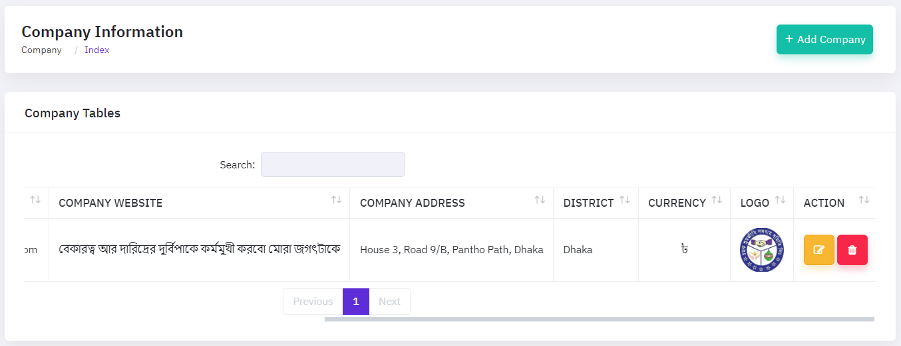To edit a company information, click the "EDIT ICON," which will bring up a new popup window. This box allows you to update the essential company information by entering new information. Once you've made your changes, simply click the "Update" button to save them.

To add a new company, select the "Add New Company" button, which will launch a new form window. This form requires you to enter crucial information about the company, such as their company name, mobile number, . You will also define their function or designation inside the organization, as well as their status (active or inactive). Once you've completed all of the essential fields, click "Submit" to save the new company's information.

Role Information
The Role Information feature enables administrators to properly manage and assign user responsibilities within the system. This tool allows you to create, edit, and delete roles that are tailored to your organization's specific needs. Administrators can guarantee that users only have access to functionality that is relevant to their duties by defining permissions for each position. The user-friendly interface makes position assignment simple, allowing for easy updates or reassignments as organizational needs change. This feature improves the software's security, accountability, and workflow efficiency by maintaining a clear hierarchy of roles and permissions.
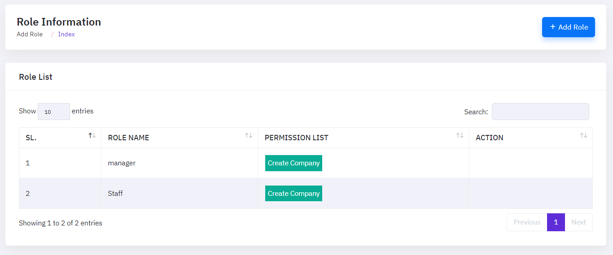To add a new role, select the "Add Role" button, which will launch a new form window. This form requires you to enter crucial information about the role, such as master setup,account Management, Loan Management, DPS Management,FDR Management, Voucher Management, SMS Management. You will also define their function or designation inside the organization. Once you've completed all of the essential fields, click "Submit" to save the new role's information.

Branch Manage
The Branch feature enables users to manage and organize information about various branches within the corporation. This feature is intended to streamline the process of adding, modifying, and preserving branch-related data. Administrators can enter critical information such as the name of the branch, its location, contact information, and assigned managers using a simple interface. The functionality ensures that all branch details are easily accessible, searchable, and updateable with little effort. Furthermore, the system includes powerful administration capabilities that enable you to create new branches or alter existing ones, speeding branch operations and maintaining uniform data across the firm.
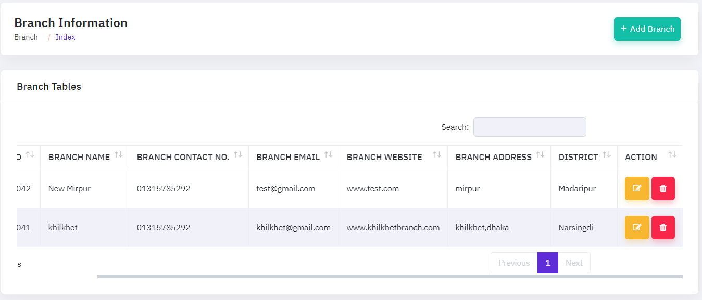To edit a branch, click the "EDIT ICON," which will bring up a new popup window. This box allows you to update the essential branch information by entering new information. Once you've made your changes, simply click the "Update" button to save them.

To add a new branch, select the "Add New branch" button, which will launch a new form window. This form requires you to enter crucial information about the branch, such as their name,website,contact, address, email, district. You will also define their function or designation inside the organization, as well as their status (active or inactive). Once you've completed all of the essential fields, click "Submit" to save the new branch's information.

Area Manage
The Area enables the efficient management of geographical regions linked with member organizations and operations. This feature allows users to add, update, delete, and search for specific places, ensuring that locations are properly organized and categorised. Users may quickly update the database by changing region details using straightforward interfaces, and the search tool provides for quick access to certain areas. This functionality is especially valuable for companies that need to manage a big number of members dispersed across multiple regions, since it provides greater control over location-based data for more efficient operations.
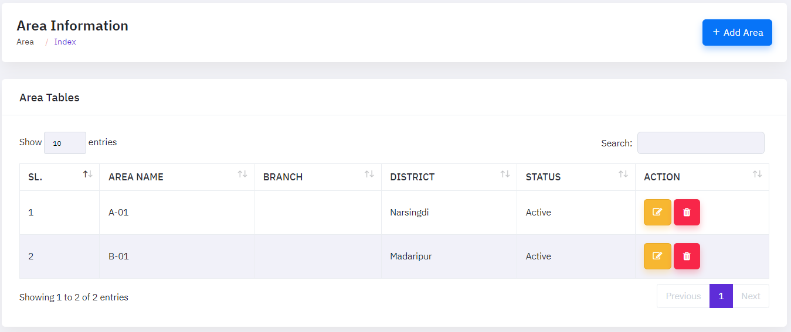To edit a area, click the "EDIT ICON," which will bring up a new popup window. This box allows you to update the essential area information by entering new information. Once you've made your changes, simply click the "Update" button to save them.

To add a new area, select the "Add New area" button, which will launch a new form window. This form requires you to enter crucial information about the area, such as branch, name, district and status. You will also define their function or designation inside the organization, as well as their status (active or inactive). Once you've completed all of the essential fields, click "Submit" to save the new area's information.

Shomity Manage
Shomity is a complete tool that simplifies and improves information management across multiple modules. This feature offers a centralized setup interface, allowing administrators to define and configure critical parameters and settings required for optimal operation. It enables users to customize data fields, configure validation rules, and establish default values based on their organization's specific requirements. The Master Setup ensures consistency and accuracy by allowing users to create predefined templates and configurations that are used throughout the software, lowering the chance of errors and boosting data integrity. The Shomity, with its clear interface and comprehensive capabilities, simplifies difficult configuration processes, allowing users to more efficiently manage and maintain their software environment.
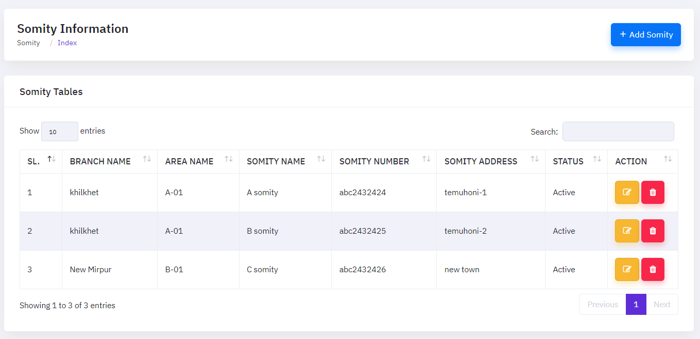To edit a shomity, click the "EDIT ICON," which will bring up a new popup window. This box allows you to update the essential shomity information by entering new information. Once you've made your changes, simply click the "Update" button to save them.

To add a new shomity, select the "Add New Shomity" button, which will launch a new form window. This form requires you to enter crucial information about the shomity, such as their shomity. You will also define their function or designation inside the organization, as well as their status (active or inactive). Once you've completed all of the essential fields, click "Submit" to save the new shomity's information.

Shareholder Manage
The Shareholder provides a comprehensive method for maintaining precise records of all shareholders in an organization. This module allows users to easily add, modify, delete, and update shareholder profiles, which include critical information such as personal details, contact information, shareholding status, and membership records. Finding certain shareholders is quick and straightforward thanks to the built-in search and filter tools. Additionally, the system includes facilities for tracking share allotments, dividend distributions, and other financial transactions involving shareholders, assuring accurate and up-to-date data management. This feature improves transparency and streamlines the process of managing shareholder-related operations in an organized manner.
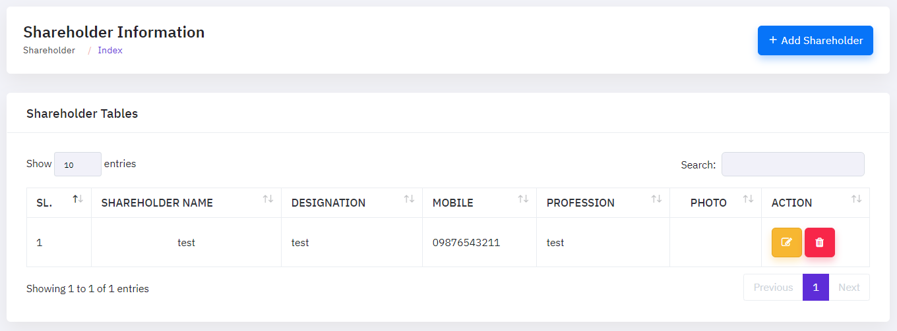To edit a shareholder, click the "EDIT ICON," which will bring up a new popup window. This box allows you to update the essential shareholder information by entering new information. Once you've made your changes, simply click the "Update" button to save them.

To add a new shareholder, select the "Add New Shareholder" button, which will launch a new form window. This form requires you to enter crucial information about the shareholder, such as their shareholder name, email, address, profession , designation , photo. You will also define their function or designation inside the organization, as well as their status (active or inactive). Once you've completed all of the essential fields, click "Submit" to save the new shomity's information.

Staff Manage
The "Booking Details" function in the marine import module enables customers to handle and track all important information for import shipments. This feature includes the ability to amend and delete booking details, allowing users to simply update information when changes occur or remove unneeded entries. The edit tool allows you to change shipment details, while the delete option helps keep the system structured and clutter-free, ensuring that only the most correct and up-to-date booking information is preserved.
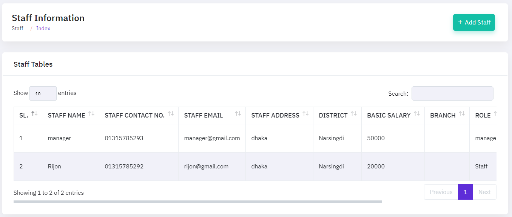To edit a staff, click the "EDIT ICON," which will bring up a new popup window. This box allows you to update the essential staff information by entering new information. Once you've made your changes, simply click the "Update" button to save them.

To add a new staff, select the "Add New staff" button, which will launch a new form window. This form requires you to enter crucial information about the staff, such as name, contact number ,branch ,role ,address , email , password ,district, salary, port of destination,invoice number etc. You will also define their function or designation inside the organization, as well as their status (active or inactive). Once you've completed all of the essential fields, click "Submit" to save the new staff's information.

Bank Information
The Bank Information is intended to simplify the process of managing bank details for the organization. This feature enables users to easily add, amend, or delete bank information, ensuring that all financial activities are associated with the relevant accounts. The user-friendly interface makes it simple to enter important information such as bank name, branch, account number, and IFSC code. Furthermore, the search feature enables users to rapidly access certain bank information, saving time and lowering the possibility of errors. Easy Shomity's function ensures that all bank-related data is structured and easily accessible, which improves overall financial management and reporting.
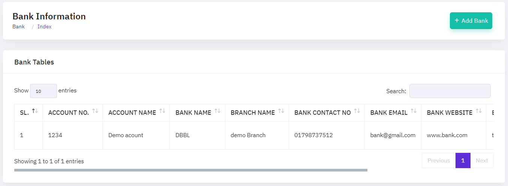To edit a bank, click the "EDIT ICON," which will bring up a new popup window. This box allows you to update the essential bank information by entering new information. Once you've made your changes, simply click the "Update" button to save them.

To add a new bank, select the "Add New bank" button, which will launch a new form window. This form requires you to enter crucial information about the bank, such as account number, bank email ,account name ,bank website ,bank name, bank address , branch name ,district, bank contact number etc. You will also define their function or designation inside the organization, as well as their status (active or inactive). Once you've completed all of the essential fields, click "Submit" to save the new bank's information.

Loan Category
The Loan Category feature enables you to conveniently arrange and manage many loan categories inside your cooperative management system. This tool allows you to add, update, and delete loan categories, ensuring that your loan offerings are properly categorized and up to date. Finding certain loan categories is quick and easy thanks to the intuitive search option. This streamlined management method promotes clarity and order, resulting in better decision-making and faster access to key loan information for both administrators and members.
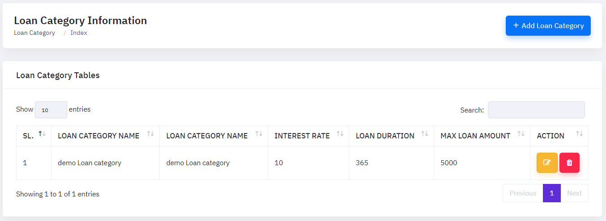To edit a loan category, click the "EDIT ICON," which will bring up a new popup window. This box allows you to update the essential loan category by entering new information. Once you've made your changes, simply click the "Update" button to save them.

To add a new loan category, select the "Add loan category" button, which will launch a new form window. This form requires you to enter crucial information about the loan category, such as category name , interest rate, loan duration , max loan amount. You will also define their function or designation inside the organization, as well as their status (active or inactive). Once you've completed all of the essential fields, click "Submit" to save the new loan category's information.

Loan Schema
The Loan Schema administration feature provides a simple approach to managing multiple loan configurations within the system. This tool allows administrators to design and manage loan types, interest rates, payback schedules, and other loan-related characteristics. Easy Shomity simplifies the loan configuration process by providing a centralized and user-friendly interface that ensures all relevant details are accurately gathered and kept. This not only improves loan management efficiency, but it also ensures policy consistency and compliance.
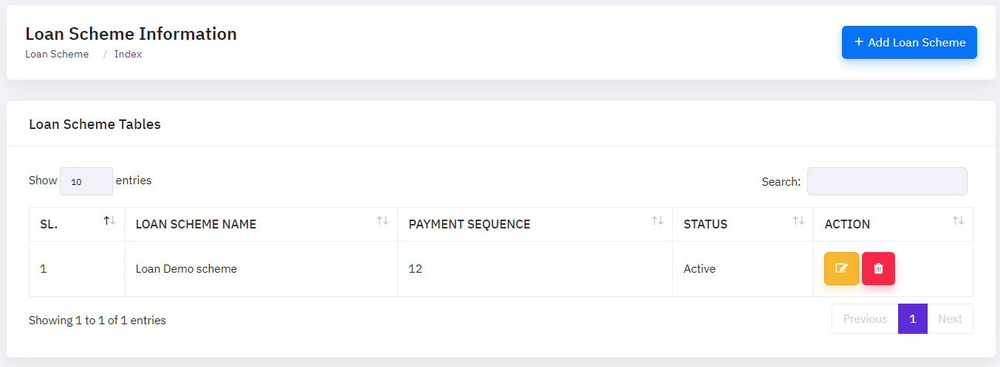To edit a loan schema, click the "EDIT ICON," which will bring up a new popup window. This box allows you to update the essential loan schema by entering new information. Once you've made your changes, simply click the "Update" button to save them.

To add a new loan schema, select the "Add loan schema" button, which will launch a new form window. This form requires you to enter crucial information about the loan schema, such as schema name , payment sequence, status. You will also define their function or designation inside the organization, as well as their status (active or inactive). Once you've completed all of the essential fields, click "Submit" to save the new loan schema's information.

Voucher Category
The Voucher Category provides a simple method for organizing and maintaining numerous voucher categories inside your cooperative organization. This functionality enables administrators to easily create, update, and delete voucher categories, ensuring that all financial transactions are properly categorized. Users may rapidly find certain categories using straightforward search and filter options, saving time on administrative work. Easy Shomity improves the overall efficiency and accuracy of your society's financial management system by keeping voucher categories organized.
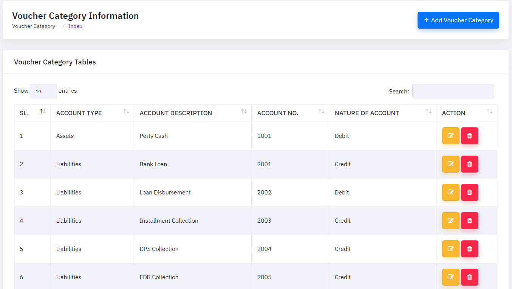To edit a vouchar category, click the "EDIT ICON," which will bring up a new popup window. This box allows you to update the essential vouchar category by entering new information. Once you've made your changes, simply click the "Update" button to save them.

To add a new vouchar category, select the "Add vouchar category" button, which will launch a new form window. This form requires you to enter crucial information about the vouchar category, such as account type, account description, account number, nature of account. You will also define their function or designation inside the organization, as well as their status (active or inactive). Once you've completed all of the essential fields, click "Submit" to save the new vouchar category's information.

Monthly Saving Scheme Information
The Monthly Saving Scheme is intended to simplify the handling of regular savings contributions from members. This feature enables administrators to build and personalize savings plans based on the organization's policies, such as setting contribution amounts, defining payment frequency, and determining the interest rates or benefits connected with each plan. Users may simply monitor member involvement, log deposits, and generate reports thanks to an accessible interface, assuring transparency and efficiency in group savings management. Furthermore, the system sends automated reminders for due payments, lowering the risk of missing contributions and instilling a disciplined saving culture in members. This comprehensive arrangement allows firms to manage their financial operations more accurately and easily.
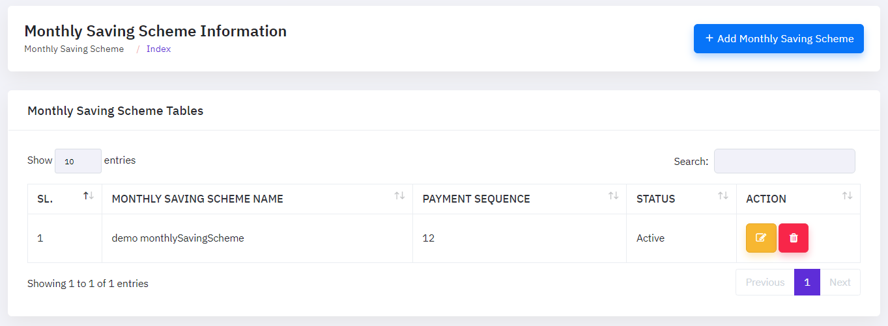To edit a saving schema, click the "EDIT ICON," which will bring up a new popup window. This box allows you to update the essential saving schema by entering new information. Once you've made your changes, simply click the "Update" button to save them.

To add a new saving schema, select the "Add saving schema" button, which will launch a new form window. This form requires you to enter crucial information about the saving schema, such as name, payment sequence, status. You will also define their function or designation inside the organization, as well as their status (active or inactive). Once you've completed all of the essential fields, click "Submit" to save the new saving schema's information.

Fixed Deposit Scheme Information
The Fixed Deposit Scheme streamlines long-term savings arrangements. This feature enables administrators to establish numerous deposit schemes with specified terms, such as duration, interest rates, and minimum deposits. By customizing these variables, users can provide their members with a variety of fixed deposit choices that appeal to diverse financial goals and investing preferences. The arrangement is intended to be adaptable, allowing for easy changes to the schemes over time, ensuring that they remain in line with market developments and organizational requirements. With its user-friendly interface, managing fixed deposits becomes more efficient, transparent, and accessible, resulting in better financial planning and administration inside the firm.
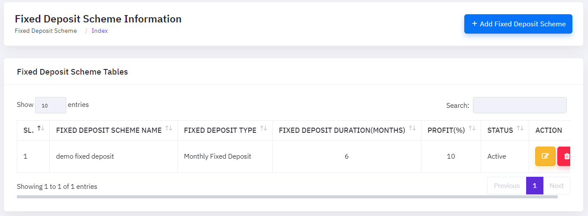To edit a deposit schema, click the "EDIT ICON," which will bring up a new popup window. This box allows you to update the essential deposit schema by entering new information. Once you've made your changes, simply click the "Update" button to save them.

To add a new deposit schema, select the "Add deposit schema" button, which will launch a new form window. This form requires you to enter crucial information about the deposit schema, such as name,type , duration , profit , status. You will also define their function or designation inside the organization, as well as their status (active or inactive). Once you've completed all of the essential fields, click "Submit" to save the new deposit schema's information.

Holiday Information
Holiday Information enables managers to easily manage holidays throughout the firm. This feature provides a centralized method for adding, editing, and removing public, regional, and company-specific holidays as needed. It ensures that all members of the organization are aware of forthcoming holidays, allowing for better planning and scheduling. The user-friendly interface allows them to easily enter holiday information, define dates, and categorize holidays based on their category. Additionally, this configuration allows for easy connection with other modules, ensuring that holidays are automatically reflected in attendance, payroll, and other relevant sections of the system.
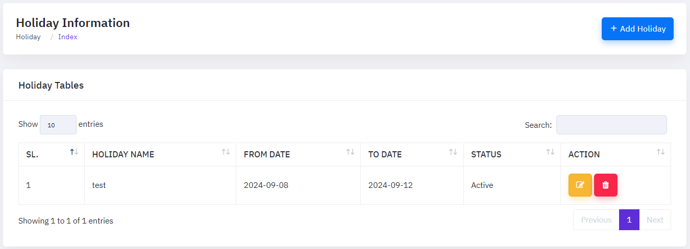To edit a holiday, click the "EDIT ICON," which will bring up a new popup window. This box allows you to update the essentialholiday by entering new information. Once you've made your changes, simply click the "Update" button to save them.

To add a new holiday, select the "Add holiday" button, which will launch a new form window. This form requires you to enter crucial information about the holiday, such as name , from date , to date , status. You will also define their function or designation inside the organization, as well as their status (active or inactive). Once you've completed all of the essential fields, click "Submit" to save the new holiday's information.

Account
The Account feature is intended to improve the management of individual and group accounts in microfinance businesses. This feature enables customers to easily create and manage savings and loan accounts, as well as other financial products. It allows you to create accounts, track deposits and withdrawals, and calculate interest and fees automatically. Additionally, the tool allows for detailed reporting, which provides insights into account balances and transaction histories. With strong security safeguards, the Account feature protects all financial data, making it a crucial tool for managing member finances within Easy Shomity. This module is divided into some main submodules:
- Add Member
- Loan Generator List
- Passbook Management
- Share/Sales Purchase
- New Loan Application
Member Information
The Member Information system is intended to make managing and obtaining member information more efficient. This feature enables administrators to create and update detailed profiles for each member, including personal information, contact information, and membership status. It guarantees that all important data is structured and easily available, hence improving overall management of individuals within the organization. With straightforward search and filter capabilities, the system allows for quick retrieval of member information, boosting communication and decision-making processes.
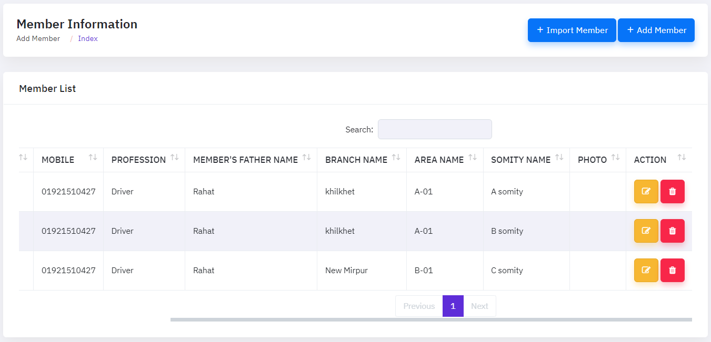To edit a company information, click the "EDIT ICON," which will bring up a new popup window. This box allows you to update the essential company information by entering new information. Once you've made your changes, simply click the "Update" button to save them.

To import a member, click the "Import member," which will open a new popup window. In this window, you can upload a file containing member details. After selecting the appropriate file, click the "Import" button to upload and process the information. This will add the new member to the system.

To add a new company, select the "Add New Company" button, which will launch a new form window. This form requires you to enter crucial information about the company, such as their branch, area , shomity , member name, mobile number etc. You will also define their function or designation inside the organization, as well as their status (active or inactive). Once you've completed all of the essential fields, click "Submit" to save the new company's information.

Loan Guarantor Information
"Loan Guarantor Information" is intended to record and maintain information about individuals who guarantee a loan. This part allows users to enter important information about the guarantor, such as their personal data, contact information, and relationship to the borrower. It ensures that the guarantor's information is appropriately documented, giving a clear picture of who is responsible for supporting the loan. This feature streamlines the loan approval process by organizing and storing guarantor information in an organized manner, allowing for easy access and management.
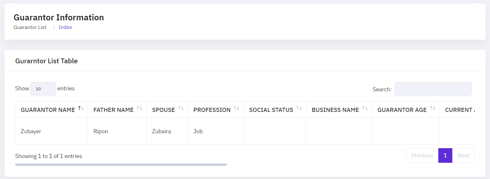To edit a loan generate information, click the "EDIT ICON," which will bring up a new popup window. This box allows you to update the essential loan generate information by entering new information. Once you've made your changes, simply click the "Update" button to save them.

Passbook Information
The Passbook Information function provides account holders with a comprehensive and easy-to-use solution to track their financial actions. This tool gives real-time updates on all transactions, allowing members to see their account balance, deposits, withdrawals, and interest earnings in an organized manner. Each entry is clearly identified with the date, transaction type, and amount to provide transparency and easy of comprehension. Furthermore, the digital passbook may be accessed at any time, allowing members to keep track of their finances without the need for physical documents. This functionality improves overall efficiency and confidence within the community, allowing members to be informed and in charge of their resources.

To edit a loan generate information, click the "EDIT ICON," which will bring up a new popup window. This box allows you to update the essential loan generate information by entering new information. Once you've made your changes, simply click the "Update" button to save them.

To add a new passbook, select the "Add Passbook" button, which will launch a new form window. This form requires you to enter crucial information about the passbook, such as member, mobile number,passbook number,issues date, issues type, Previous number, passbook fee. You will also define their function or designation inside the organization, as well as their status (active or inactive). Once you've completed all of the essential fields, click "Submit" to save the new passbook's information.

Loan
Loan provides a streamlined approach for managing member loans in a cooperative society. This functionality enables administrators to simply issue and manage loans, track payback schedules, and calculate interest rates using predetermined terms. Members can access their loan information, including outstanding balances and payment histories, straight from the system. The Loan function also offers automated reminders for forthcoming payments, which ensures timely repayments and lowers the chance of default. Easy Shomity simplifies financial processes by centralizing loan management, allowing societies to keep more accurate records and deliver better service to their members. This module is divided into some main submodules:
- Loan Information
- Add Installment Collection
- All Installment Collection
- Loan Closing
Loan Information
The Loan Information provides a comprehensive overview of all loan-related facts, making the administration process easier for users. This tool enables users to quickly access, track, and manage loan data such as loan amounts, interest rates, repayment plans, and outstanding balances. With clear and straightforward information at their fingertips, consumers can make educated decisions, track repayment progress, and ensure that all loan-related operations run smoothly. The easy design guarantees that even users with limited technical understanding can easily navigate and use the feature, resulting in better financial management inside the platform.
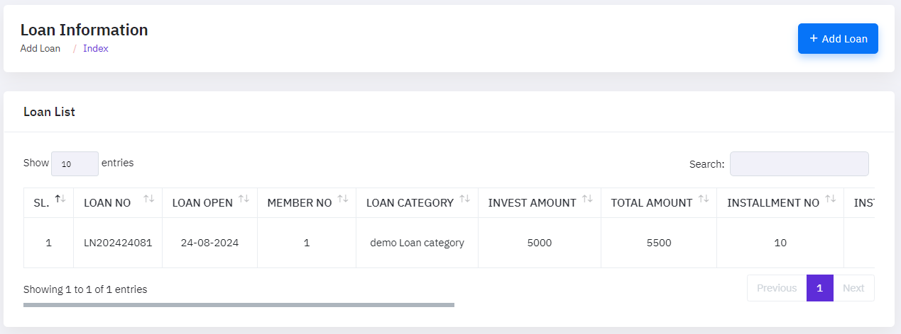To edit a loan information, click the "EDIT ICON," which will bring up a new popup window. This box allows you to update the essential loan information by entering new information. Once you've made your changes, simply click the "Update" button to save them.

To add a new loan, select the "Add New loan" button, which will launch a new form window. This form requires you to enter crucial information about the loan, such as their branch, area , shomity , member name, mobile number etc. You will also define their function or designation inside the organization, as well as their status (active or inactive). Once you've completed all of the essential fields, click "Submit" to save the new loan's information.

Add Installment Collection
The "Installment Collection in Loan" feature simplifies the loan repayment process by allowing customers to collect and track installments more efficiently. This feature enables customizable installment scheduling, ensuring that payments are recorded accurately and on schedule. It enables a variety of payment ways, making it convenient for both members and the organization. Furthermore, the tool provides thorough reporting and insights, allowing administrators to monitor loan statuses, manage missed payments, and ensure financial stability within the shomity. This technology is critical for effective financial management and member satisfaction, making loan processing more organized and time-efficient.
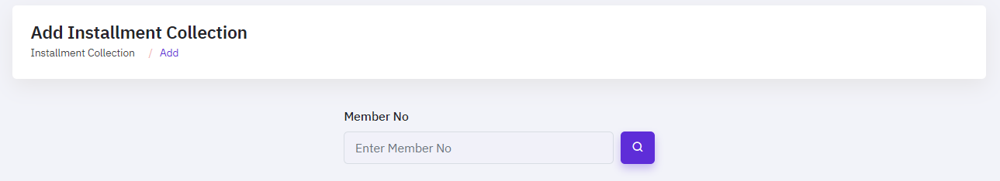DPS
The DPS (Deposit Pension Scheme) provides an easy way for members to save regularly and build wealth over time. Members can use this option to make fixed monthly deposits into their accounts, which will increase with interest over a specific time period. Easy Shomity makes the process simple by allowing customers to set up automatic payments, track their savings progress, and manage their accounts all from one platform. The DPS feature is intended to promote disciplined savings habits, assisting members in meeting their financial objectives while reaping the benefits of a structured savings plan. This module is divided into some main submodules:
- Add Monthly Saving
- DPS Collection
- DPS Withdraw
- DPS Closing
Add Monthly Saving
Monthly Savings in DPS provides members with a systematic and effective option to save on a regular basis. This tool allows users to donate a set amount each month, encouraging disciplined savings and assuring steady financial progress. Easy Shomity makes the process easier by automating monthly donations, tracking payments, and keeping detailed records of accrued savings. This feature allows members to quickly manage their savings strategies, ensuring they accomplish their financial goals over time. The convenience and transparency provided by this feature make it a useful tool for good personal budget management within the cooperative.

To edit a monthly saving, click the "EDIT ICON," which will bring up a new popup window. This box allows you to update the essential savings by entering new information. Once you've made your changes, simply click the "Update" button to save them.

To add a new savings, select the "Add savings" button, which will launch a new form window. This form requires you to enter crucial information about the savings, such as searching number. You will also define their function or designation inside the organization, as well as their status (active or inactive). Once you've completed all of the essential fields, click "Submit" to save the new saving's information.

DPS Collection
The DPS Collection is a sophisticated instrument that simplifies the management of regular contributions in savings systems. This tool enables users to conveniently track and collect monthly installments from members, ensuring that all payments are properly recorded and maintained. The DPS Collection system decreases the risk of missing payments with automatic reminders and notifications, making it easier for administrators to maintain a healthy financial flow throughout the organization. The functionality also includes thorough data and analytics, allowing users to track the progress of each member's savings plan, assuring openness and accountability throughout the process.
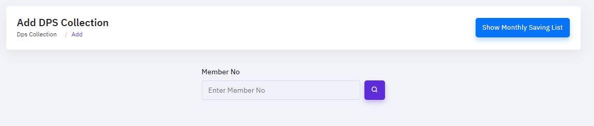DPS Withdraw
The DPS (Deposit Pension Scheme) Withdrawal offers participants a simple and quick option to manage their money. This tool allows users to easily withdraw monies from their DPS accounts. Members can initiate a withdrawal request through a user-friendly interface, which is rapidly handled, allowing them to access their funds quickly. The tool also provides transparency by allowing users to view their withdrawal history and account balance in real time. Overall, the DPS Withdraw feature increases members' financial freedom and control, allowing them to better fulfill their financial requirements and aspirations.
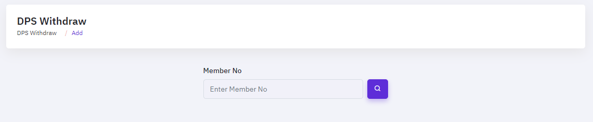DPS Closing
DPS Closing is a streamlined and effective method for closing a Deposit Pension Scheme (DPS) account. This function enables users to easily conclude their DPS accounts by calculating total savings, interest generated, and any applicable penalties or fees. The system automatically creates a full report of the closing balance to ensure openness and accuracy. Easy Shomity allows members to effortlessly commence the DPS closure process, see final statements, and get their matured monies without fuss. This tool is intended to make financial management simple and accessible to all users.
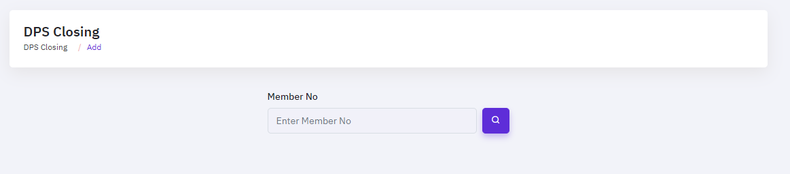FDR
The FDR (Fixed Deposit Receipt) provides a streamlined and effective method for managing fixed deposits in a cooperative society. This feature enables users to easily create and maintain fixed deposit accounts, ensuring that all details, including deposit amounts, maturity dates, and interest rates, are precisely recorded and managed. It provides a comprehensive overview of all active and matured FDRs, allowing members to make informed investment decisions. The function also features automated interest computations and reminders for future maturity dates, making fixed deposit management both convenient and trustworthy. This module is divided into some main submodules:
- Fixed Deposit Information
- Fixed Deposit Withdraw
- Fixed Deposit Close
Fixed Deposit Withdraw
The Fixed Deposit Withdraw feature enables users to withdraw monies from their fixed deposit accounts before or at maturity. This tool ensures that users may easily access their funds, giving them more freedom in managing their finances. The process is intended to be simple, minimizing fuss and providing clear options for partial or full withdrawal. Users may check the status of their withdrawal requests and receive timely updates, ensuring transparency and confidence in their financial dealings with the cooperative.
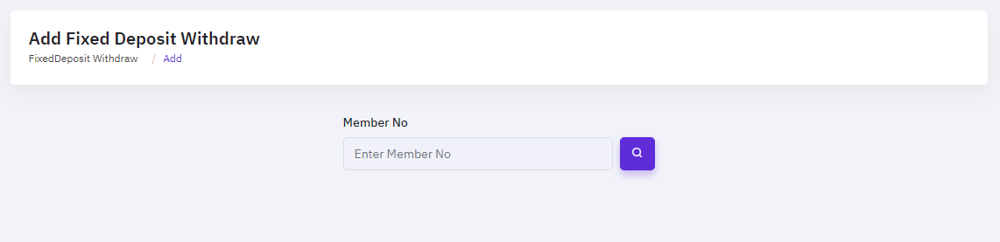Fixed Deposit Closing
The Fixed Deposit Closing feature in the Easy Shomity platform simplifies the process of managing and closing fixed deposit accounts. It allows users to seamlessly handle the maturity or early withdrawal of their fixed deposits with just a few clicks. The feature ensures that all calculations, including interest accrued and penalties (if any), are accurately processed, providing a clear and transparent final settlement. Users can easily view the status of their fixed deposits, initiate closures, and track the disbursement of funds directly within the platform, making the entire process efficient and user-friendly.
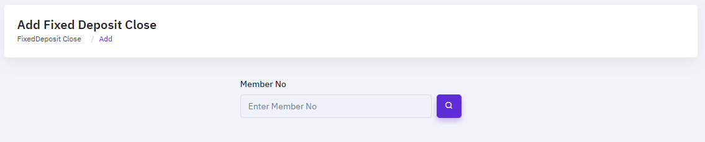Voucher
The voucher streamlines financial transactions by allowing users to effectively handle revenue and expense vouchers. This feature simplifies the process of documenting and tracking financial transactions, resulting in accurate and up-to-date records. Users may quickly generate, amend, and delete vouchers, making it a versatile tool for financial management. The search functionality improves usability by providing quick access to certain vouchers, saving time spent on financial management. Overall, Easy Shomity's voucher feature is intended to help users manage their finances more effectively. This module is divided into some main submodules:
- Expense Voucher
- Income Voucher
- Bank Deposit
- Bank Withdraw
- Shareholder Deposit
- Shareholder Withdraw
- Staff Fund Deposit
- Staff Fund Withdraw
- Share Profit Generate
Expense Voucher
The Expense Voucher facilitates the management of cash outflows inside the system. This program enables users to efficiently create, track, and manage a wide range of expenses, ensuring that every transaction is logged and immediately accessible. The feature allows for detailed expense recording, including purpose, amount, and date, resulting in a clear record for accountability and auditing purposes. Users can also categorize their expenses, making it easy to compile reports and evaluate spending habits. Easy Shomity's Expense Voucher function improves financial transparency and assists firms in keeping accurate financial records with less effort thanks to its user-friendly design.
To edit a voucher expense, click the "EDIT ICON," which will bring up a new popup window. This box allows you to update the essential voucher expense by entering new information. Once you've made your changes, simply click the "Update" button to save them.

To add a new voucher expense, select the "Add voucher expense" button, which will launch a new form window. This form requires you to enter crucial information about the voucher expense, such as issue date, voucher caregory, amount etc. You will also define their function or designation inside the organization, as well as their status (active or inactive). Once you've completed all of the essential fields, click "Submit" to save the new voucher expense's information.

Income Voucher
The Income Voucher is a simple approach for keeping track of income information. This tool enables users to easily create, manage, and track income vouchers within the system, resulting in accurate financial records. Users may easily enter details such as revenue sources, quantities, and dates, and the system will automatically organize and categorize the data. The user-friendly interface makes it simple to amend or delete vouchers as needed, and the search feature allows rapid access to specific information. This feature ensures that all income-related transactions are logged and accessible, hence facilitating good financial management.
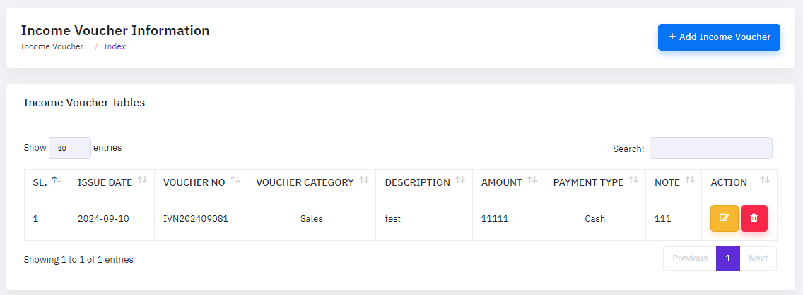To edit a voucher income, click the "EDIT ICON," which will bring up a new popup window. This box allows you to update the essential voucher income by entering new information. Once you've made your changes, simply click the "Update" button to save them.

To add a new voucher income, select the "Add voucher income" button, which will launch a new form window. This form requires you to enter crucial information about the voucher income, such as issue date, voucher caregory, amount etc. You will also define their function or designation inside the organization, as well as their status (active or inactive). Once you've completed all of the essential fields, click "Submit" to save the new voucher income's information.

Bank Deposit
The Bank Deposit streamlines the process of recording and managing bank deposits for financial transactions. This feature allows users to easily document deposits made into the bank, ensuring that all records are accurate and up-to-date. By providing fields for entering essential details such as the bank name, account number, deposit amount, and date, it simplifies the reconciliation of bank statements with company records. This feature enhances financial transparency and accountability, making it easier for organizations to track and manage their cash flow efficiently.
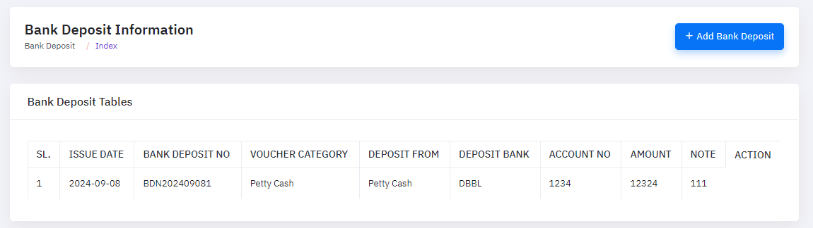To add a new voucher bank deposit, select the "Add bank deposit" button, which will launch a new form window. This form requires you to enter crucial information about the bank deposit, such as issue date, voucher caregory, amount etc. You will also define their function or designation inside the organization, as well as their status (active or inactive). Once you've completed all of the essential fields, click "Submit" to save the new bank deposit's information.

Bank Withdraw
The Bank Withdraw streamlines the process of managing withdrawals from a bank account directly within the system. This feature allows users to create and manage withdrawal vouchers efficiently, ensuring that all transactions are accurately recorded and traceable. By using this feature, you can easily track the withdrawal amount, date, and other relevant details, providing transparency and accountability in financial management. It also helps in reconciling bank statements with the system records, making financial audits simpler and more reliable.
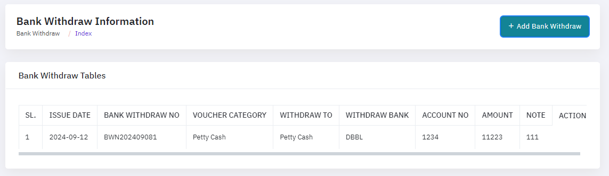To add a new voucher bank withdraw, select the "Add bank withdraw" button, which will launch a new form window. This form requires you to enter crucial information about the bank withdraw, such as issue date, voucher caregory, amount etc. You will also define their function or designation inside the organization, as well as their status (active or inactive). Once you've completed all of the essential fields, click "Submit" to save the new bank withdraw's information.

Shareholder Deposit
The Shareholder Deposit allows organizations to manage deposits made by shareholders seamlessly. This feature streamlines the process of recording and tracking shareholder contributions, ensuring that all deposits are accurately documented and easily accessible for future reference. With the ability to add, edit, and delete deposit entries, this tool provides flexibility and control, making it easier for organizations to maintain accurate financial records. The search functionality further enhances usability, allowing users to quickly locate specific deposit entries, thereby improving efficiency and transparency in financial management.

Shareholder Withdraw
The Shareholder Withdraw streamlines the process of withdrawing funds for shareholders within a cooperative society. This feature allows shareholders to easily request and manage withdrawals from their accounts, ensuring a transparent and efficient transaction process. The system automatically calculates the available balance, validates the withdrawal request, and updates the shareholder's account accordingly. With comprehensive record-keeping and real-time updates, the "Shareholder Withdraw" feature enhances financial management and provides a seamless experience for both shareholders and administrators.

StaffFund Deposit
The StaffFund Deposit streamlines the process of managing and recording staff fund deposits with ease and efficiency. This feature allows administrators to quickly create deposit vouchers, ensuring accurate tracking and management of funds contributed by or allocated to staff members. With intuitive forms and automated calculations, it reduces the risk of errors and simplifies financial reconciliation. Additionally, the system provides comprehensive search, edit, and delete functionalities, making it easy to manage deposits, update records, and maintain a clear audit trail, ultimately enhancing financial transparency and accountability within the organization.

Shareholder Withdraw
The Staff Fund Withdraw provides a streamlined process for managing and recording staff fund withdrawals. This feature allows administrators to easily track and manage withdrawal requests, ensuring that funds are disbursed accurately and efficiently. Users can create, edit, and approve withdrawal vouchers with just a few clicks, making it simple to maintain accurate financial records. The system also offers search and filtering options to quickly locate specific vouchers, enhancing the overall management of staff funds and improving financial transparency within the organization.

Report
Report offers a streamlined way to generate detailed and accurate reports essential for managing your cooperative society. This feature allows administrators to compile comprehensive reports on various aspects such as member contributions, loan disbursements, and overall financial health. With customizable report formats, users can tailor the output to meet specific needs, ensuring that all necessary data is included. The reports can be easily exported in multiple formats, such as PDF or Excel, making it convenient for sharing with stakeholders. This feature not only enhances transparency but also aids in making informed decisions, ultimately contributing to the effective management of the cooperative. This module is divided into some main submodules:
- Loan Report
- DPS Report
- FDR Report
- Account Report
- Share Report
Loan report
The Loan Report is a powerful tool designed to provide comprehensive insights into the status of loans within the system. This feature allows users to generate detailed reports on various aspects of loan management, including the total number of active loans, outstanding balances, repayment schedules, and overdue payments. The Loan Report is essential for monitoring the financial health of the organization, enabling managers to track the performance of loan products, identify potential risks, and make informed decisions. With user-friendly filters and customizable options, the report can be tailored to focus on specific time periods, loan types, or borrower categories, ensuring that the data presented is relevant and actionable. This module is divided into some main submodules:
- Member Wish Loan
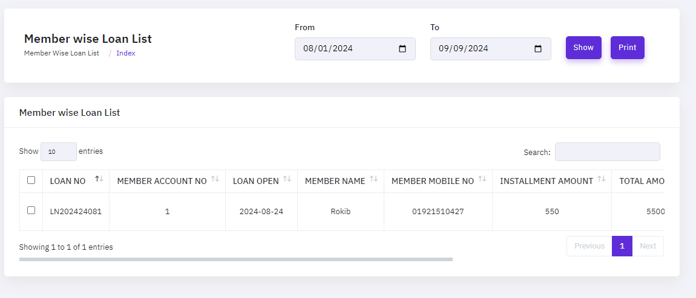
- Member Wish Due Loan
- Date Wish Loan Statement
- Date Wish Loan dps_collection
- Staff Wish Loan
- Staff Wish Loan Collection
- Staff Wish Loan Closing
DPS Report
The DPS (Deposit Pension Scheme) provides a comprehensive overview of all activities related to deposit pension schemes within an organization. This feature allows administrators and users to easily track member contributions, calculate interest, and generate detailed statements for each account. With real-time data access, it ensures accurate and up-to-date reporting, facilitating better financial management and transparency. The report can be customized to show various parameters like member details, deposit history, and maturity status, making it a vital tool for maintaining clear records and ensuring compliance with financial regulations. This module is divided into some main submodules:
- Member Wish DPS
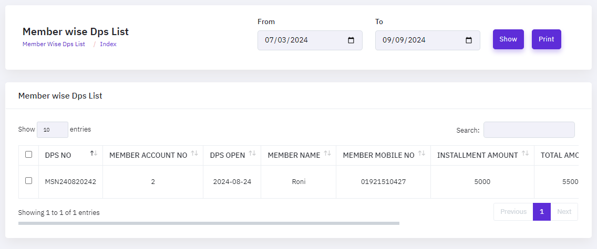
- Member Wish DPS Collection
- DPS Statement
- DPS Withdraw
- Date Wise DPS Closing
FDR Report
The FDR (Fixed Deposit Receipt) Report is a powerful tool that enables financial institutions to efficiently manage and monitor their fixed deposit accounts. This feature provides a detailed overview of all fixed deposit receipts, including crucial information such as maturity dates, interest rates, and principal amounts. By utilizing the FDR Report, institutions can easily track the status of deposits, generate insightful reports, and ensure timely management of renewals or closures. This feature enhances operational efficiency and supports better decision-making in managing member savings and investments. This module is divided into some main submodules:
- Member Wish FDR
- FDR Statement
- FDR Withdraw
- Date Wise FDR Closing
Account Report
The Account Report provides a comprehensive overview of all financial activities within the system. It allows users to generate detailed reports on various account transactions, including deposits, withdrawals, and balances. With this feature, you can easily track financial movements, monitor account statuses, and ensure transparency in all monetary dealings. The Account Report is designed to be user-friendly, offering customizable options for filtering and sorting data, making it easier for users to analyze financial trends and make informed decisions for effective financial management. This module is divided into some main submodules:
- Member List
- Expense Report
- Income Report
- Cash/Bank Statement
- Account Ledger Details
- Trial Balance
- Profit & Loss
- Balance Sheet
- Summary Report
Our Services(Creative Software Solutions)
Creative Software is committed to providing a wide selection of high-quality services that are tailored to your specific company requirements. Our team of experts is dedicated to providing solutions that not only fulfill the needs of the sector, but also support creativity and development.
- Software Development: We specialize in developing unique software that is suited to your specific business needs. From concept to deployment, our development approach ensures that your software is scalable, secure, and efficient, allowing you to improve your operations and meet expectations.
- Website Development: A website is the digital representation of your company. We design and construct websites that are both visually appealing and performance-optimized. Whether you require a simple business website or a complicated e-commerce platform, we have the expertise to bring your idea to reality.
- Apps Development: In today's focused on mobile devices environment, having a reliable app is critical. We create native and cross-platform mobile apps that deliver a consistent user experience across all devices. Our apps are intended to engage people and add genuine value to your business.
- Digital Marketing: Our digital marketing services allow you to efficiently reach your target audience. We provide a comprehensive range of marketing solutions, such as SEO, social media marketing, content marketing, and paid search advertising. Our initiatives are data-driven and aim to maximize Returns.
- UI/UX Design: A excellent user experience is essential for the success of any digital product. Our UI/UX design team is dedicated to building intuitive and engaging interfaces that increase user happiness and promote conversions. We ensure that your product is not only practical, but also enjoyable to use.
- IT Outsourcing: Allow us to handle your IT needs while you focus on expanding your business. Our IT outsourcing services give you access to high-quality talent and technology, ensuring that your IT infrastructure is dependable, secure, and scalable. We provide adaptable solutions that complement your business model and budget.
FAQ
A FAQ is a list of frequently asked questions (FAQs) and answers on a particular topic.
Credits & Resource
- Each code is considered property for the Creative software. The project will be delivered to clients for uses only.
- This project is not marketable and can only be used. If proof of sale is found, you can take action in accordance with the software law.
- © 2024 Creative Software. All Rights Reserved.
Support
This Service maintenance will cover following services:
- Online Training
- Online Support
- Pay to visit and get support